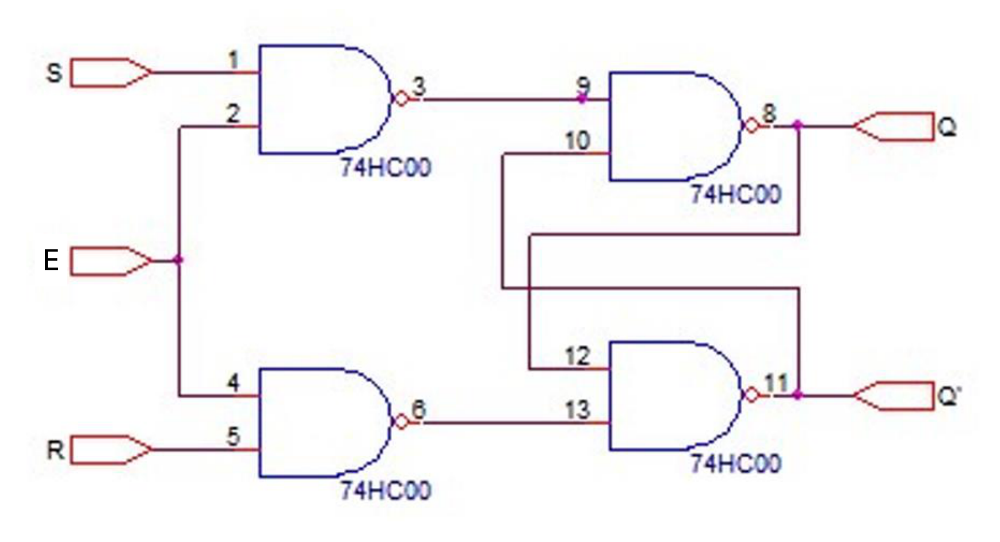
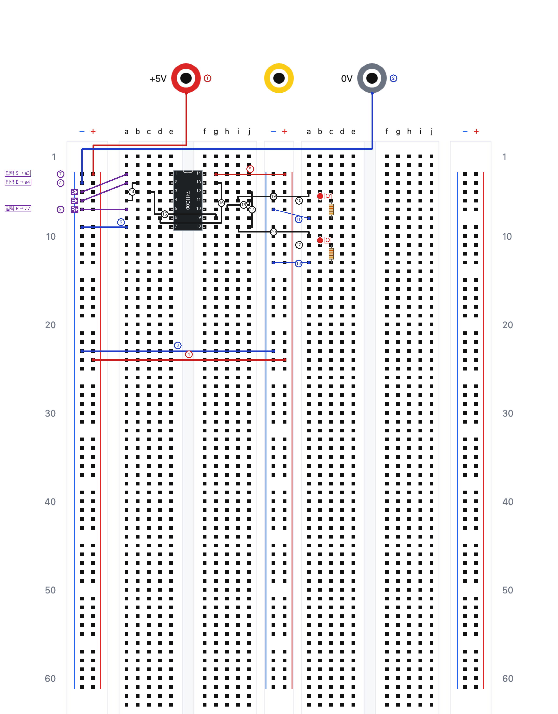
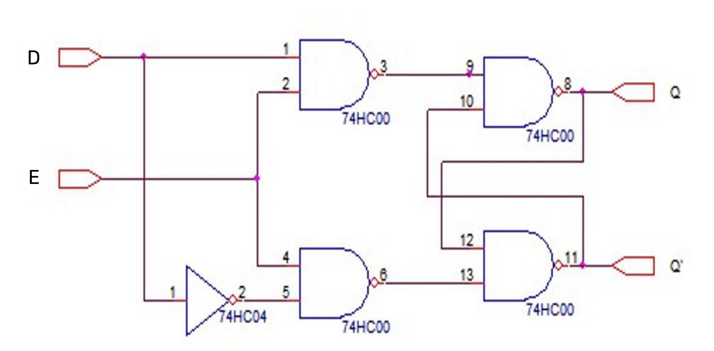
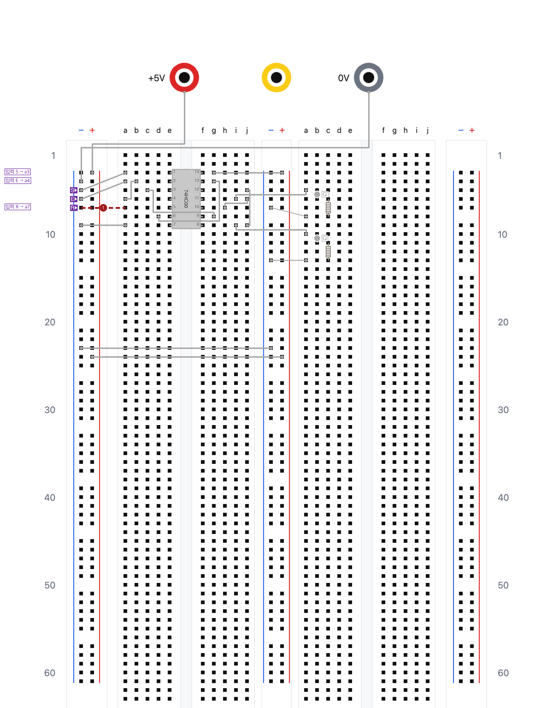
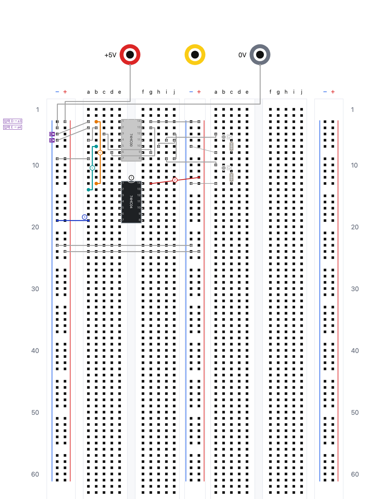
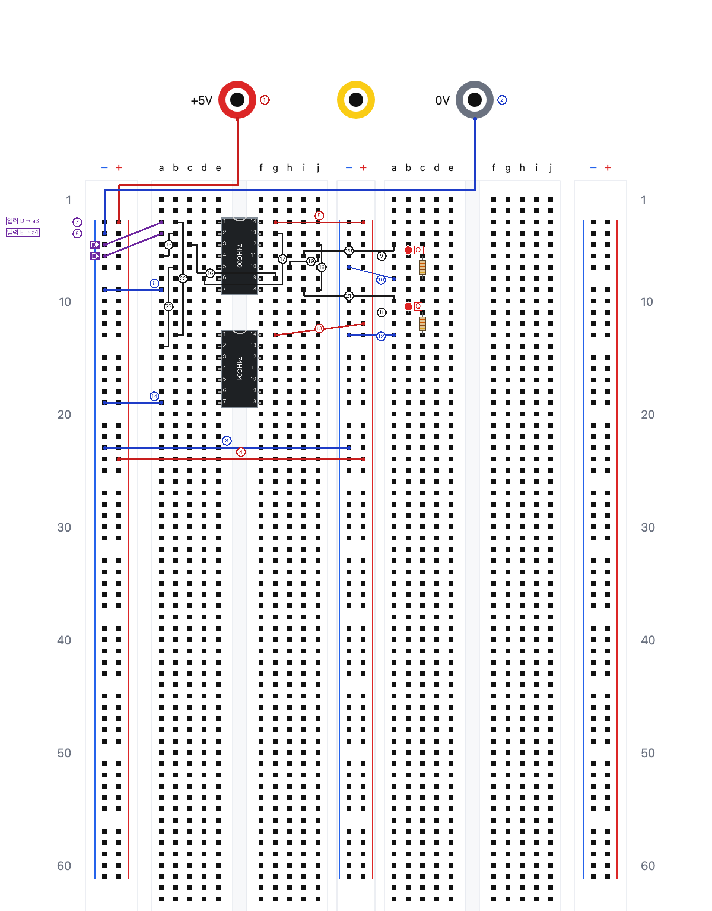
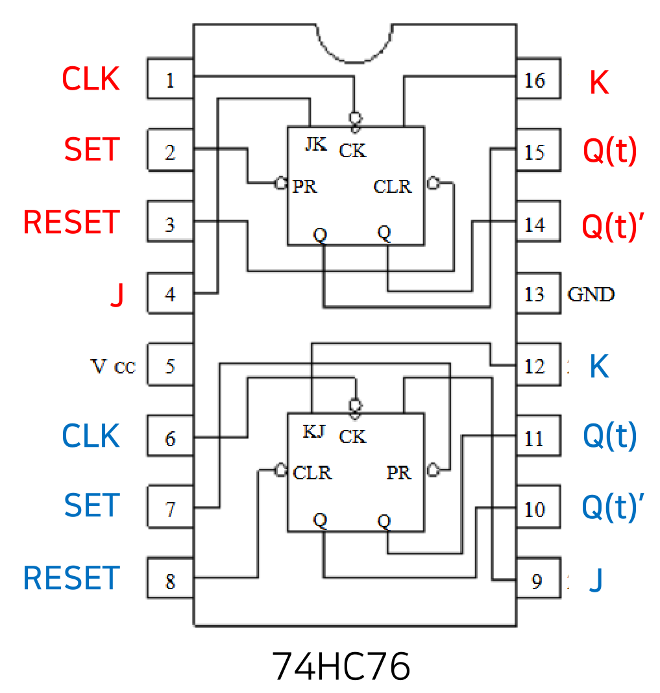
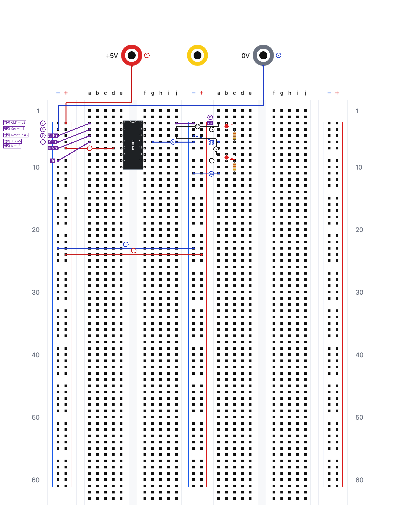

| 회로 | LED (위 → 아래) | 기록 칸 |
|---|---|---|
| C1·C2 (74HC00) | Q'(pin 11) · Q(pin 8) | Q 만 |
| C3 (74HC76) | Q(pin 15) · Q'(pin 14) | Q 만 |
선 색 — 빨강 +5V · 파랑 0V · 검정 신호 · 초록 칩 사이 중간 노드 · 회색 = 앞 단계에서 그대로 둔다 · 빨간 점선 = 뽑는다 · 회색 점선 = 계측기(꽂지 않고 문다)
진리표 — 확인 칸에는 맞으면 ✓, 다르면 실제로 본 값을 적어요. 안 본 행은 비워 둬요. 표를 통째로 못 했으면 그 표 아래에 진행하지 않았음 이라고 적어요.
스텝표 — 회색 칸에 읽은 값을 단위와 함께 적어요 (예: 3.2 V, 47 Ω). 대조할 예상값이 없는 표라서 확인 칸은 없어요.
파형 — 격자에 직접 그리고 판독 조건 줄(V/div·time/div·프로브·모드)을 채워요. 조건을 안 적으면 결과보고서에서 화면의 칸을 볼트로 바꿀 수 없어요.
| 순서 | 회로 | 쓰는 IC | 기록할 표 |
|---|---|---|---|
| 1/3 | C1 · 실험 1) SR Latch with Enable (74HC00) | 74HC00 | T1 SR Latch with Enable Truth Table |
| 2/3 | C2 · 실험 2-1) D Latch with Enable (74HC00 + 74HC04) | 74HC00 · 74HC04 | T2 D Latch with Enable Truth Table |
| 3/3 | C3 · 실험 3-2) JK F/F – IC(74HC76) 활용 (74HC76) | 74HC76 | T3 JK F/F (74HC76) Truth Table |
| IC | 입력 | 출력 | VCC | GND |
|---|---|---|---|---|
| 74HC00 (quad 2-input NAND) | 1·2, 4·5, 9·10, 12·13 | 3, 6, 8, 11 | 14 | 7 |
| 74HC76 (dual JK F/F, 1번만 씀) | CLK=1, SET=2, RESET=3, J=4, K=16 | Q=15, Q'=14 | 5 | 13 |
74HC04 (hex inverter): 1→2 만 쓴다. VCC 14, GND 7. 74HC76 의 K 는 pin 16 이다 — J(pin 4)와 반대쪽 f쪽 맨 위다. 2번 플립플롭은 CLK=6, SET=7, RESET=8, J=9, K=12, Q=11, Q'=10 이고 쓰지 않는다.
슬롯은 역할에 붙는다: 래치·플립플롭 본체(K1)와 D 를 뒤집는 인버터(K2). C1 → C2 는 K1 의 74HC00 한 패키지와 그 배선을 그대로 두고 K2 만 더한다. C3 은 전부 걷으므로 같은 K1 에 74HC76 을 꽂는다 — 16핀이라 K1 의 74HC00 보다 한 행 길다. v2 판형이라 칩은 전부 좌 블록에 두고(R9) LED 는 우 블록이다. 좌·우 는 브레드보드 왼쪽·오른쪽 블록, 행은 칩 pin 1 이 앉는 행이다. 홀 주소 좌 a7 은 왼쪽 블록 a 열 7행이다 (열 a~e 가 칩 a쪽, f~j 가 f쪽). 행은 배치.py 의 LAYOUT 이고 배치기(python -m scripts.lab.place_search <배치.py>) 결과 배치탐색.md 와 같다. 74HC76 전원핀 pin 5·13 이 앉는 7·6행은 레일 빈 행이 아니다.
| 슬롯 | 자리 | 회로별 칩 |
|---|---|---|
| K1 | 좌 3행 | C1 74HC00 (U1, SR 래치) · C2 74HC00 (U1, 그대로) · C3 74HC76 (U3, JK F/F) |
| K2 | 좌 13행 | C1 비움 · C2 74HC04 (U2, D 반전) · C3 비움 |

강의노트 p7 · 회로 구성
교안 p7 회로도 그대로. 이 주차 첫 회로라 맨바닥에서 시작한다. 칩이 하나라 단계 표를 두지 않는다 — 칩 전원·레일 브리지·LED 두 사슬·입력 점퍼 셋·칩 안 배선 다섯(E 이어 감 하나와 게이트 사이 넷)을 한 번에 꽂고 T1 을 돌린다. 첫 입력은 교안 원문대로 Set(T1 4행, E=1, S=1, R=0) 또는 Reset(3행, E=1, S=0, R=1)이고, 그 뒤 1·2행(유지), 마지막에 5행(S=R=1) 순서로 본다.
## 노드 표에는 입력만으로 값이 정해지는 앞단 NAND 두 출력만 싣는다. Q·Q' 는 앞 상태에 따라 값이 갈리는 되먹임 노드라 기록표 입력의 식으로 적을 수 없다. T1 이 맞지 않으면 아래 두 노드부터 찍어 본다.

결선도: 실험06_1_결선도_SR래치.png
LED 순서(위→아래): ①Q' ②Q
손그림은 이 그림을 따라 그려요
출처: manual:p7
순서 열 번호대로 입력을 넣어요. 이 회로는 직전 상태를 기억해서, 같은 입력이라도 앞에 넣은 행에 따라 LED 가 달라요
보는 LED: ①Q' = Q(t)의 반대 ②Q = Q(t) — 모두 1이면 켜짐
| 순서 | E | S | R | Q(t)예상 | 켜지는 LED | 꺼지는 LED | 확인 | 사진 파일명 |
|---|---|---|---|---|---|---|---|---|
| ④ | 0 | X | X | Q(t-1) | 직전 그대로 | — | ||
| ③ | 1 | 0 | 0 | Q(t-1) | 직전 그대로 | 1 100.jpg | ||
| ① | 1 | 0 | 1 | 0: Reset | ①Q' | ②Q | 1 101.jpg | |
| ② | 1 | 1 | 0 | 1: Set | ②Q | ①Q' | 1 110.jpg | |
| ⑤ | 1 | 1 | 1 | X (부정) | ①Q' ②Q | 없음 | 1 111.jpg | |
사진: 시험한 행마다 1장씩 찍어요(불일치 행은 꼭). 파일명은 표의 '사진 파일명' 열 그대로예요 — 앞에 실험 번호(예: 실험03)는 붙이지 않아요
| 불일치 행 | 예상 | 실제 | 사진 파일 | 짐작된 원인 |
|---|---|---|---|---|
틀린 행이 나오면 입력 쪽 노드부터 프로브로 찍어 봐요. 기대값과 처음 갈라지는 노드가 고장 자리예요 — 그 게이트의 입력 핀이 틀리면 선, 맞으면 게이트 문제예요
| E | S | R | (S·E)' U1 pin 3 |
(E·R)' U1 pin 6 |
|---|---|---|---|---|
| 0 | X | X | — | — |
| 1 | 0 | 0 | 1 | 1 |
| 1 | 0 | 1 | 1 | 0 |
| 1 | 1 | 0 | 0 | 1 |
| 1 | 1 | 1 | 0 | 0 |

강의노트 p8 · 회로 구성
교안 p8 회로도 그대로, C1 위에 짓는다. 1걷기 에서 C1 의 R 입력 점퍼 한 가닥을 뽑고, 1단계에서 74HC04(U2)를 K2 에 꽂아 전원을 잇고 두 가닥을 더한다. C1 의 S 점퍼(U1 pin 1)가 그대로 D 가 되고, E 점퍼·칩 안 배선 다섯·LED 두 사슬은 손대지 않는다. 걷기 주소는 배치.py 가 뽑은 걷기 그림의 주소다.
1단계의 관측 노드는 D' 다. D' 에는 LED 가 없다 — E=1 에서 D 를 0·1 로 바꿔 LED Q·Q' 가 따라 바뀌는지로 본다(D=0 에서 Q 를 0 으로 내리는 것이 D' 다). 멀티미터·로직프로브가 있으면 U2 pin 2 를 직접 찍는다. 이 관측 방법은 교안 원문이 아니다. 1단계 뒤 T2 전 행을 돌린다.

이 단계에서: 전원을 끄고 걷기 ①(R 입력 점퍼 → U1 pin 5, 좌 GND레일7행→좌 a7)을 뽑는다. 그림의 빨간 점선이 그 한 가닥이다. 회색 선은 손대지 않는다. 새로 꽂는 것은 없다
먼저 뽑아요
회색 = 앞 단계에서 그대로 둔 것 20개
확인: 뽑은 한 가닥이 손에 있고 좌 GND레일7행·좌 a7 홀이 비어 있다 (LED 검사 없음)

이 단계에서: 74HC04 를 K2 에 꽂고 전원(14→VCC, 7→GND)을 꽂는다. C1 의 S 점퍼(U1 pin 1)는 그대로 두고 이제 D 라 부른다. 신호선: U1 pin 1→U2 pin 1 (D 이어 감), U2 pin 2→U1 pin 5 (D')
회색 = 앞 단계에서 그대로 둔 것 20개
확인 노드: D' (U2 pin 2)
확인: 노드 D' — E=1 로 두고 D 를 0·1 로 바꿔 LED Q·Q' 로 본다 (D=0 에서 Q 꺼짐·Q' 켜짐, D=1 에서 반대). 74HC04 첫 사용
| 입력 — 점퍼 1=+5V · 0=GND | D'예상 U2 pin 2 | 확인 |
|---|---|---|
| D | ||
| 0 | 1 | |
| 1 | 0 |
완성본 — 손그림 원도 (회색 없음)

결선도: 실험06_2-1_결선도_D래치.png
LED 순서(위→아래): ①Q' ②Q
손그림은 이 그림을 따라 그려요
출처: manual:p8
순서 열 번호대로 입력을 넣어요. 이 회로는 직전 상태를 기억해서, 같은 입력이라도 앞에 넣은 행에 따라 LED 가 달라요
보는 LED: ①Q' = Q(t)의 반대 ②Q = Q(t) — 모두 1이면 켜짐
| 순서 | E | D | Q(t)예상 | 켜지는 LED | 꺼지는 LED | 확인 | 사진 파일명 |
|---|---|---|---|---|---|---|---|
| ③ | 0 | X | Q(t-1) | 직전 그대로 | — | ||
| ① | 1 | 0 | 0: Reset | ①Q' | ②Q | 2-1 10.jpg | |
| ② | 1 | 1 | 1: Set | ②Q | ①Q' | 2-1 11.jpg | |
사진: 시험한 행마다 1장씩 찍어요(불일치 행은 꼭). 파일명은 표의 '사진 파일명' 열 그대로예요 — 앞에 실험 번호(예: 실험03)는 붙이지 않아요
| 불일치 행 | 예상 | 실제 | 사진 파일 | 짐작된 원인 |
|---|---|---|---|---|
틀린 행이 나오면 입력 쪽 노드부터 프로브로 찍어 봐요. 기대값과 처음 갈라지는 노드가 고장 자리예요 — 그 게이트의 입력 핀이 틀리면 선, 맞으면 게이트 문제예요
| E | D | (D·E)' U1 pin 3 |
(E·D')' U1 pin 6 |
|---|---|---|---|
| 0 | X | — | — |
| 1 | 0 | 1 | 0 |
| 1 | 1 | 0 | 1 |

강의노트 p11 · 회로 구성
교안 p11 핀 배치 그림대로, C2 를 걷고 새로 짓는다. 전원을 끄고 C2 의 신호선·입력 점퍼를 전부 뽑고, 74HC00·74HC04 와 그 전원선 네 가닥, LED 사슬 두 개(LED·330Ω·GND 선)도 뽑는다. 레일 브리지만 그대로 둔다. 74HC76(U3)을 K1 에 꽂고 전원(pin 5 → VCC, pin 13 → GND), LED 두 사슬, 입력 점퍼 다섯을 꽂는다. 칩이 하나이고 칩 안 배선이 없어 단계 표를 두지 않는다. 플립플롭은 출력이 앞 상태에 따라 갈려 ## 노드 표에 적을 조합 노드가 없다.
교안 p11 표 순서대로 돌린다(회색 행도 돌린다). 1~3 행 동안 CLK 점퍼는 GND 에 둔다 — +5V 에 두었다가 3 행에서 GND 로 옮기면 그 자체가 하강 에지라 Q 가 그때의 J·K 대로 바뀐다. 1·2 행은 SET·RESET 점퍼 하나만 GND 로 내려 클럭 없이 출력을 정한다. 3 행은 둘 다 +5V 에 두고(교안 "JK에 따른 결과 확인 시 HIGH"), CLK 를 GND 에 둔 채 J·K 를 바꿔도 Q 가 그대로인지 본다. 4~7 행은 CLK 를 +5V 로 올리고 J·K 를 꽂은 뒤 CLK 를 GND 레일로 옮겨 하강 에지 하나를 낸다. 오르는 에지에서는 Q 가 바뀌지 않는다(ST M74HC76 진리표 마지막 행 NO CHANGE). 이 순서는 교안 원문이 아니다.

결선도: 실험06_3-2_결선도_JK플립플롭.png
LED 순서(위→아래): ①Q ②Q'
손그림은 이 그림을 따라 그려요
출처: manual:p11
보는 LED: ①Q = Q(t) ②Q' = Q(t)의 반대 — 모두 1이면 켜짐
| Set | Reset | CLK | J | K | Q(t)예상 | 켜지는 LED | 꺼지는 LED | 확인 | 사진 파일명 |
|---|---|---|---|---|---|---|---|---|---|
| 0 | 1 | X | X | X | 1: Set | ①Q | ②Q' | — | |
| 1 | 0 | X | X | X | 0: Reset | ②Q' | ①Q | — | |
| 1 | 1 | 0 | X | X | Q(t-1) | 직전 그대로 | — | ||
| 1 | 1 | 1->0 | 0 | 0 | Q(t-1) | 직전 그대로 | — | ||
| 1 | 1 | 1->0 | 0 | 1 | 0: Reset | ②Q' | ①Q | — | |
| 1 | 1 | 1->0 | 1 | 0 | 1: Set | ①Q | ②Q' | — | |
| 1 | 1 | 1->0 | 1 | 1 | Q(t-1)' | 직전과 반대 | — | ||
사진: 시험한 행마다 1장씩 찍어요(불일치 행은 꼭). 파일명은 표의 '사진 파일명' 열 그대로예요 — 앞에 실험 번호(예: 실험03)는 붙이지 않아요
| 불일치 행 | 예상 | 실제 | 사진 파일 | 짐작된 원인 |
|---|---|---|---|---|